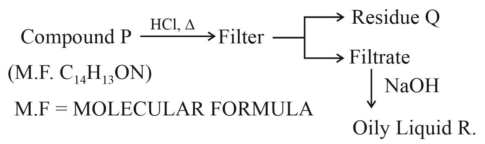

Filter questions
Q1
CHEM-2021-0101-S2-Q059
2021 | 27 Jul | Shift 2
—
Integer
For the first order reaction A →2 B, 1 mole of reactant A gives 0.2 moles of B after 100 minutes. The half life of the reaction is...... min. (Round off to the nearest integer). [Use: ln 2 = 0.69, ln 10 = 2.3 Properties of logarithms: ln xy = y ln x ln( x ) = ln x −ln y] y (Round off to the nearest integer)
Answer: 655
Q2
CHEM-2021-0101-S1-Q057
2021 | 31 Aug | Shift 1
—
Integer
For a first order reaction, the ratio of the time for 75% completion of a reaction to the time for 50% completion is ___________. (Integer answer)
Answer: 2
Q3
CHEM-2022-0101-S2-Q042
2022 | 24 Jun | Shift 2
—
MCQ
For a first order reaction, the time required for completion of 90% reaction is ' x ' times the half life of the reaction. The value of ' x ' is (Given: ln 10 = 2.303 and log 2 = 0.3010 )
Answer: C
Q4
CHEM-2023-0101-S1-Q059
2023 | 10 Apr | Shift 1
—
Integer
A molecule undergoes two independent first order reactions whose respective half lives are 12 min and min. If both the reactions are occurring then the time taken for the consumption of the reactant is 3 50% ______ min. (Nearest integer)

Answer: 2
Q5
CHEM-2023-0101-S1-Q048
2023 | 13 Apr | Shift 1
—
Integer
is the time required for the reaction to undergo completion and is the time required for the t87.5 87.5% t50 reaction to undergo 50% completion. The relation between t87.5 and t50 for a first order reaction is t87.5 = x × t50 The value of x is _________. (Nearest integer)

Answer: 1
Q6
CHEM-2023-0101-S2-Q060
2023 | 13 Apr | Shift 2
—
Integer
A ( g ) →2 B ( g ) + C ( g ) is a first order reaction. The initial pressure of the system was found to be 800 mm Hg which increased to 1600 mm Hg after 10 min. The total pressure of the system after 30 min will be mm Hg. (Nearest integer)

Answer: 2200
Q7
CHEM-2023-0101-S1-Q045
2023 | 25 Jan | Shift 1
—
Integer
For the first order reaction A →B the half life is 30 min. The time taken for 75% completion of the reaction is mm. (Nearest integer) Given: log 2 = 0.3010 log 3 = 0.4771 log 5 = 0.6989
Answer: 1
Q8
CHEM-2024-0101-S1-Q056
2024 | 06 Apr | Shift 1
—
Integer
Time required for 99.9% completion of a first order reaction is _______ times the time required for completion of 90% reaction.(nearest integer)
Answer: 3
Q9
CHEM-2024-0101-S2-Q055
2024 | 06 Apr | Shift 2
—
Integer
Consider the two different first order reactions given below A + B →C (Reaction 1 ) P →Q (Reaction 2) The ratio of the half life of Reaction 1: Reaction 2 is. If and represent the time taken to complete 5: 2 t1 t2 2/3rd and 45th of Reaction 1 and Reaction 2, respectively, then the value of the ratio t1: t2 is ______ ×10−1 (nearest integer). [Given: log10(3) = 0.477 and log10(5) = 0.699 ]
Answer: 17
Q10
CHEM-2024-0101-S2-Q059
2024 | 27 Jan | Shift 2
—
Integer
Time required for completion of 99.9% of first order reaction is ________ times of half life (t1 ) of the / 2 reaction

Answer: 10
Q11
CHEM-2024-0101-S1-Q059
2024 | 30 Jan | Shift 1
—
Integer
The rate of first order reaction is 0.04 mol L−1 s−1 at 10 minutes and 0.03 mol L−1 s−1 at 20 minutes after initiation. Half life of the reaction is ______ minutes. (Given log 2 = 0.3010, log 3 = 0.4771) Round off your answer to the nearest integer.
Answer: 24